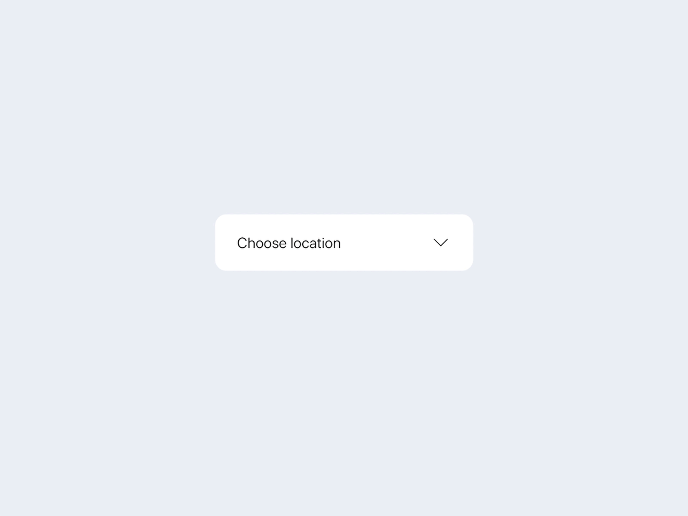

UI Design, Case Study
Individual
2 Weeks
Figma
This project examines the accessibility of dropdown components from three applications, leveraging trade-offs between learnability, memorability, efficiency and accessibility.
In the end we will redesign one component to enhance its accessibility and solves for a, as Kat Holmes puts it, "mismatch - moments where human interactions are hindered by an absence of appropriate design solutions
Accessibility and usability of the three dropdown components compared in a table
Mouse
Input
Text and arrow function sepeartely, could be confusing for first time users
Can be easily navigated
Good efficiency and smooth interaction as everything is laid out
Output
Hover: arrow icon darkens
Press: menu appears
Hover: “font” cue appears, color darkens
Press: menus appears
Hover: dropdown icon appears
press: menu collapsed
Keyboard
Input
Can press up/down arrow to navigate through items
Can not reach dropdown/ go from collapsed stage to expanded stage. A search button elsewhere for searching font is accessible
Could not navigate to dropdown with just keyboard
Output
Text and arrow function sepeartely
Clear instructions announced with voiceover
Options darkens as pressing up/down buttons
Has a dropdown icon unlike the mac version
Intuitive and good learnability
Phone
Input
Output
A closer look at the Apple News dropdown via state models and a revision with some intentional trade-offs
Redesigning the Apple News Dropdown Component to make it more accessible to more users
Initial State:
Still start with expanded state for efficiency
Increased contrast between text and backgroud to increase accessibility
Add arrow to indicate it's a dropdown and improve learnability
Collapsed State:
If users don't want to see the list they can collapse it
Arrow still present after mouse leaves, improves memorability
Overall the components we examined did well in the ease of use for frequent users and mouse users, as well as high contrast between text and background.
But keyboard users were generally less prioritized. Figma had a reasonable focus order with clear voiceover instructions,
Google Doc's was hidden in a search button, and Apple News did not provide a good way to access/ use the dropdown.
In our redesign we tried to solve some mismatches considering these groups of users.
Including those who can only use the keyboard, who are not familiar with web design and the concept of a dropdown,
and people who have lower vision / hard time distinguishing colors.